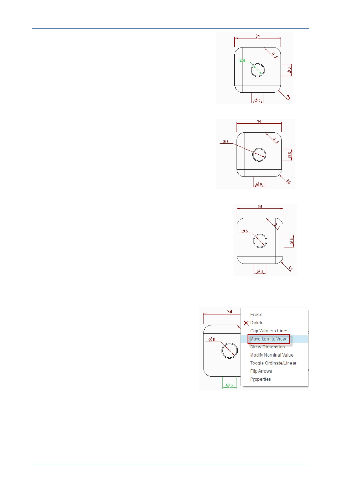

PTC Academic Program
2. Moving dimensions:
Click away from the model views to cancel any
selections.
Click to select the text for one of the dimensions.
The text will turn green to show it is selected.
Click and drag the selected text to a new location.
Here the 8 mm diameter has been moved to the side of
the view.
3. Deleting dimensions:
Near the top of the cube there is a 0.5 mm chamfer
dimension. This dimension will be noted in a comment
so is not required in this view.
Click to select the dimension then press Delete
on the keyboard.
The dimension is removed from the drawing but will
remain in the 3D model.
4. Moving dimensions to a different view:
Click to select the hole diameter below the
front view.
Right click on the selected text and pause,
from the pop-up menu, click Move item to
View .
Click on the projected view above the
current view to move the dimension.
Drag the diameter into a suitable position.
The drawing below has all the dimensions rearranged.
© 2012 PTC
Creo Parametric 2.0 Primer
Page 97